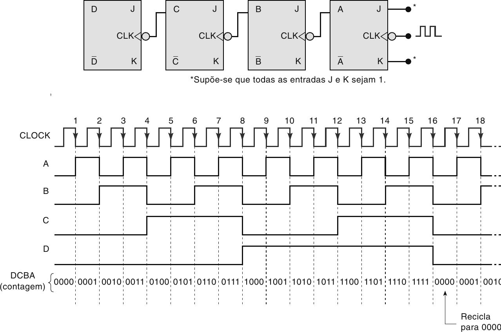
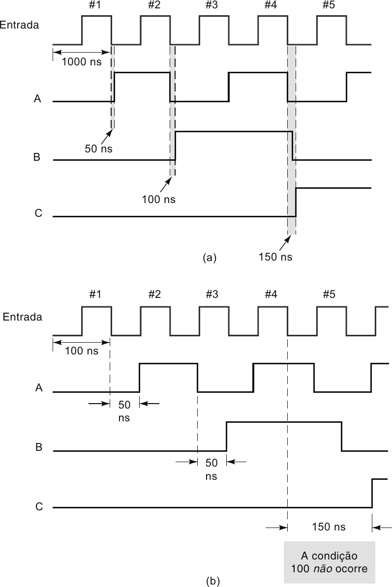
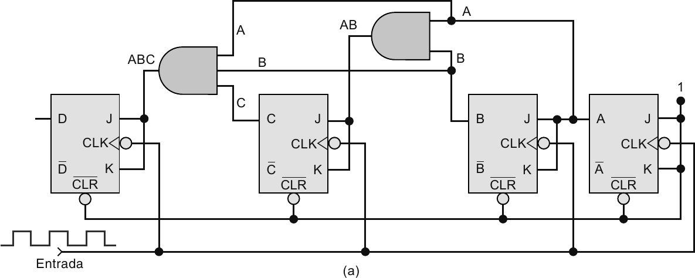
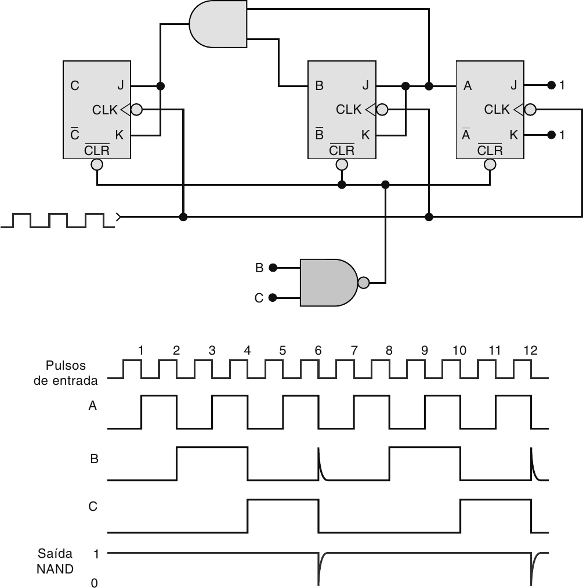
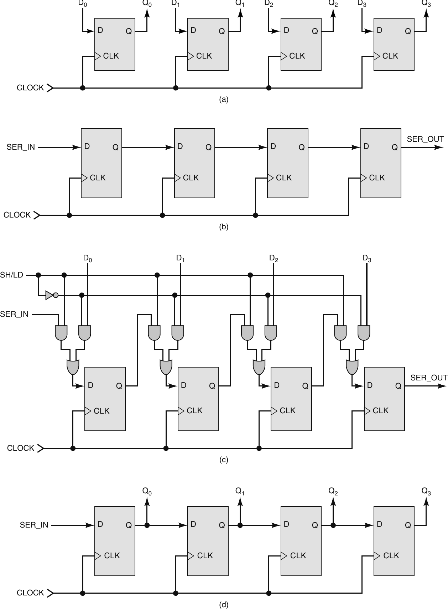
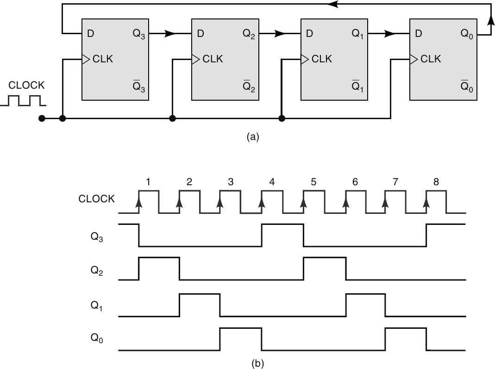
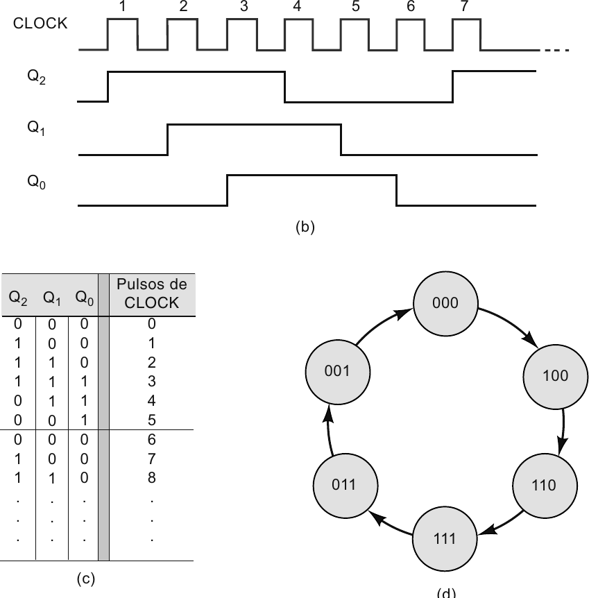

Professor: Gabriel Soares Baptista
Na aula anterior, vimos que um flip-flop armazena 1 bit.
Hoje vamos conectar vários flip-flops para construir circuitos que:
Base: Capítulo 7 de Sistemas Digitais: Princípios e Aplicações (Tocci, Widmer, Moss).
Um contador percorre uma sequência de estados a cada pulso de clock. Um registrador armazena ou desloca vários bits. Nos dois casos, o comportamento depende do estado anterior.
O ponto principal não é decorar CIs.
O ponto é reconhecer o padrão:
$$ \text{estado atual} \xrightarrow{\text{clock}} \text{próximo estado} $$
No flip-flop J-K:
$$ J=K=1 $$
Essa condição faz o flip-flop comutar.
$$ Q^+ = \overline{Q_0} $$
Se começa em $0$ e recebe pulsos sucessivos:
$$ 0 \rightarrow 1 \rightarrow 0 \rightarrow 1 \rightarrow 0 \rightarrow \cdots $$
Essa alternância já é uma contagem de 1 bit.
$$ \begin{array}{c|c} \text{Pulsos} & Q \\ \hline 0 & 0 \\ 1 & 1 \\ 2 & 0 \\ 3 & 1 \end{array} $$
Com vários flip-flops:
Se um flip-flop alterna a cada pulso, o que acontece se usarmos a saída dele como clock de outro flip-flop?
Um contador assíncrono também é chamado de contador ondulante ou ripple counter.

Todos os flip-flops J-K estão em modo toggle ($J=K=1$).
Os bits são lidos como $D C B A$.
$$ \begin{array}{c|c} \text{Pulsos aplicados} & D C B A \\ \hline 0 & 0000 \\ 1 & 0001 \\ 2 & 0010 \\ 3 & 0011 \\ 4 & 0100 \\ 15 & 1111 \\ 16 & 0000 \end{array} $$
Um contador assíncrono de 4 bits começa em $0000$.
Determine o estado $D C B A$ após $6$, $15$, $16$ e $19$ pulsos de clock.
O contador tem 4 bits, então possui $2^4 = 16$ estados. Depois de $1111$, ele volta para $0000$.
$$ \begin{array}{c|c} \text{Pulsos} & D C B A \\ \hline 6 & 0110 \\ 15 & 1111 \\ 16 & 0000 \\ 19 & 0011 \end{array} $$
No caso de 19 pulsos, contamos $16 + 3$.
O módulo é o número de estados diferentes antes de voltar ao início.
Para um contador binário simples com $N$ flip-flops:
$$ M = 2^N $$
$$ \begin{array}{c|c|c} \text{Flip-flops} & \text{Estados} & \text{Módulo} \\ \hline 1 & 0,1 & 2 \\ 2 & 00 \text{ até } 11 & 4 \\ 3 & 000 \text{ até } 111 & 8 \\ 4 & 0000 \text{ até } 1111 & 16 \end{array} $$
Em um contador binário, cada flip-flop alterna com metade da frequência do sinal que o alimenta.
Para o ciclo completo:
$$ f_{out} = \frac{f_{clk}}{M} $$
Se um contador de módulo 16 recebe $16\,\text{kHz}$, um sinal que marca a repetição do ciclo terá frequência de $1\,\text{kHz}$.
Um sistema precisa transformar um sinal de $60\,\text{Hz}$ em um sinal de $1\,\text{Hz}$.
Queremos $f_{out} = f_{clk}/M$. Substituindo:
$$ 1 = \frac{60}{M} \qquad \Rightarrow \qquad M = 60 $$
Agora escolhemos $N$:
$$ 2^5 = 32 \qquad 2^6 = 64 $$
Logo, 6 flip-flops cobrem 60 estados. Como queremos módulo 60, e não 64, será necessário reciclar antes de completar todos os estados.
O contador assíncrono é simples, mas tem um problema importante: os flip-flops não mudam todos ao mesmo tempo. A mudança se propaga de um estágio para o próximo.

Se cada flip-flop tem atraso $t_{pd}$, o último estágio só estabiliza depois que a mudança atravessa os anteriores.
Para $N$ flip-flops:
$$ T_{clk} \geq N \cdot t_{pd} \qquad\Rightarrow\qquad f_{max} = \frac{1}{N \cdot t_{pd}} $$
Quanto mais estágios, maior o atraso acumulado e menor a frequência máxima segura.
Durante alguns nanossegundos, o contador pode passar por estados intermediários que não fazem parte da sequência correta.
Não assuma que a saída de um contador assíncrono muda instantaneamente de um número binário para o próximo.
Esses estados temporários podem gerar pulsos indesejados, chamados glitches.
Um contador assíncrono de 4 bits usa flip-flops com atraso de propagação de $24\,\text{ns}$.
Estime a frequência máxima de clock.
Usamos $f_{max} = 1/(N \cdot t_{pd})$.
Como $N=4$ e $t_{pd}=24\,\text{ns}$:
$$ f_{max} = \frac{1}{4 \cdot 24\,\text{ns}} = \frac{1}{96\,\text{ns}} \approx 10{,}4\,\text{MHz} $$
Esse limite vem da propagação em cascata. Se aumentarmos o número de bits, o limite cai.
Um contador síncrono resolve o principal problema do contador assíncrono: todos os flip-flops recebem o mesmo clock, a lógica decide quais comutam, e as mudanças ocorrem na mesma borda ativa.

Para um contador binário crescente de 4 bits:
$$ \begin{array}{c|c} \text{Flip-flop} & \text{Condição para comutar} \\ \hline A & \text{sempre} \\ B & A=1 \\ C & A B = 1 \\ D & A B C = 1 \end{array} $$
Padrão:
um bit só muda quando todos os bits menos significativos estão em $1$.
Por que o bit $C$ só deve alternar quando $A=1$ e $B=1$?
Observe duas transições:
$$ 0011 \rightarrow 0100 \qquad 0111 \rightarrow 1000 $$
Nos dois casos, antes da mudança, os bits $B$ e $A$ valem $1$.
Em um contador síncrono crescente de 4 bits, determine quais flip-flops comutam na transição $0111 \rightarrow 1000$.
Comparando bit a bit:
$$ \begin{array}{c|c|c|c} \text{Bit} & \text{Antes} & \text{Depois} & \text{Ação} \\ \hline A & 1 & 0 & \text{comuta} \\ B & 1 & 0 & \text{comuta} \\ C & 1 & 0 & \text{comuta} \\ D & 0 & 1 & \text{comuta} \end{array} $$
Todos os flip-flops comutam nessa borda. Isso acontece porque, antes da transição, os bits menos significativos de cada estágio estão em $1$.
Contador assíncrono
$$ \begin{array}{c|c} \text{Clock} & \text{só no primeiro FF} \\ \hline \text{Atraso} & \text{acumulado} \\ \text{Risco} & \text{glitches} \\ \text{Vantagem} & \text{simples} \end{array} $$
Contador síncrono
$$ \begin{array}{c|c} \text{Clock} & \text{em todos os FFs} \\ \hline \text{Atraso} & t_{pd,FF}+t_{pd,porta} \\ \text{Risco} & \text{menor ripple} \\ \text{Custo} & \text{mais lógica} \end{array} $$
Nem sempre queremos contar todos os estados possíveis. Um contador com 4 flip-flops naturalmente tem 16 estados, mas um contador decimal precisa de 10.
Técnica comum: detectar um estado específico e forçar o contador a voltar ao início.

O contador de 3 bits iria naturalmente de $000$ até $111$.
A porta NAND detecta $B=C=1$, que ocorre em $110_2 = 6_{10}$.
Estados estáveis:
$$ 000,\ 001,\ 010,\ 011,\ 100,\ 101 $$
O estado $110$ aparece apenas por um tempo muito curto, como estado temporário de reset.
Para construir um contador de módulo $M$:
Quando o reset é assíncrono, o estado detectado pode existir por alguns nanossegundos e gerar glitches nas saídas.
Projete a ideia de um contador módulo 10 que conte de $0000$ até $1001$ e depois volte para $0000$. Qual estado deve ser detectado?
Estados estáveis do módulo 10:
$$ 0000,\ 0001,\ 0010,\ 0011,\ 0100,\ 0101,\ 0110,\ 0111,\ 1000,\ 1001 $$
O próximo estado natural seria $1010_2 = 10_{10}$.
Esse é o estado que deve ser detectado para acionar o reset. Na notação $D C B A$, isso significa $D=1$ e $B=1$. Esse contador também é chamado de contador decádico ou BCD.
Um contador crescente percorre:
$$ 0,\ 1,\ 2,\ 3,\ \ldots $$
Um contador decrescente percorre a sequência inversa.
Em um contador síncrono decrescente, um bit muda quando os bits menos significativos estão em $0$. Também existem contadores crescentes/decrescentes com uma entrada de controle que escolhe a direção.
Um contador carregável pode receber diretamente um valor inicial.
Exemplo: em vez de começar em $0000$, carregar $0101$ e continuar contando:
$$ 0101 \rightarrow 0110 \rightarrow 0111 \rightarrow 1000 \rightarrow \cdots $$
A carga pode ser:
Um registrador é um conjunto de flip-flops usado para armazenar vários bits ao mesmo tempo.
Se quatro flip-flops D recebem o mesmo clock, e cada um recebe um bit diferente em sua entrada $D$, o que acontece na próxima borda ativa?
Na borda ativa, todos armazenam seus bits simultaneamente. Esse é o registrador paralelo mais simples.

$$ \begin{array}{c|c|c|c} \text{Tipo} & \text{Entrada} & \text{Saída} & \text{Ideia} \\ \hline \text{PIPO} & \text{paralela} & \text{paralela} & \text{armazena palavra} \\ \text{SISO} & \text{serial} & \text{serial} & \text{desloca bits} \\ \text{PISO} & \text{paralela} & \text{serial} & \text{paralelo para serial} \\ \text{SIPO} & \text{serial} & \text{paralela} & \text{serial para paralelo} \end{array} $$
No registrador paralelo, vários bits entram juntos. No registrador serial, os bits entram um por vez, a cada pulso de clock.
Um registrador de deslocamento move os bits de um flip-flop para o próximo a cada borda de clock.
Para deslocamento à direita:
$$ \text{SER\_IN} \rightarrow Q_3 \rightarrow Q_2 \rightarrow Q_1 \rightarrow Q_0 \rightarrow \text{SER\_OUT} $$
Se o registrador tem 8 flip-flops, um bit aplicado na entrada leva 8 bordas para aparecer na saída. Esse circuito pode ser usado para atrasar um sinal digital.
Um registrador de deslocamento de 4 bits começa em $Q_3Q_2Q_1Q_0=0000$. A entrada serial recebe, em quatro bordas consecutivas: $1$, $0$, $1$, $1$. O novo bit entra em $Q_3$ e os demais deslocam para a direita.
Regra: $Q_3Q_2Q_1Q_0 \leftarrow \text{novo bit}, Q_3, Q_2, Q_1$
$$ \begin{array}{c|c|c} \text{Borda} & \text{Bit de entrada} & Q_3Q_2Q_1Q_0 \\ \hline 0 & - & 0000 \\ 1 & 1 & 1000 \\ 2 & 0 & 0100 \\ 3 & 1 & 1010 \\ 4 & 1 & 1101 \end{array} $$
Após quatro bordas, os bits recebidos estão armazenados em paralelo no registrador.
Se realimentarmos a saída de um registrador de deslocamento para a entrada, obtemos um contador por deslocamento.
Dois casos importantes: contador em anel e contador Johnson.

No contador em anel, normalmente existe apenas um bit em $1$ circulando pelo registrador.
Se o estado inicial for $1000$:
$$ 1000 \rightarrow 0100 \rightarrow 0010 \rightarrow 0001 \rightarrow 1000 $$
Módulo 4 (igual ao número de flip-flops).
O contador em anel precisa começar com exatamente um flip-flop em $1$ e os demais em $0$. Usa-se preset e clear para definir o estado inicial.
O contador Johnson também é chamado de contador em anel torcido. A diferença é que a saída invertida do último flip-flop volta para a entrada do primeiro.

Para 3 flip-flops, começando em $000$:
$$ 000 \rightarrow 100 \rightarrow 110 \rightarrow 111 \rightarrow 011 \rightarrow 001 \rightarrow 000 $$
O módulo é 6. Em geral, para $N$ flip-flops:
$$ M = 2N $$
Isso coloca o Johnson entre o contador em anel e o contador binário em uso de flip-flops.
$$ \begin{array}{c|c|c} \text{Tipo} & \text{Flip-flops} & \text{Módulo típico} \\ \hline \text{contador em anel} & N & N \\ \text{contador Johnson} & N & 2N \\ \text{contador binário} & N & 2^N \end{array} $$
Leitura prática:
Quantos flip-flops são necessários para construir um contador em anel de módulo 8? E um contador Johnson de módulo 8?
No contador em anel: $M=N$, logo $N=8$.
No contador Johnson: $M=2N$, logo $8=2N \Rightarrow N=4$.
O Johnson usa metade dos flip-flops do anel para o mesmo módulo. Em compensação, a decodificação dos estados não é tão direta.
$$ \begin{array}{c|c|c} \text{Circuito} & \text{O que faz} & \text{Pergunta principal} \\ \hline \text{contador} & \text{percorre estados} & \text{qual é o próximo estado?} \\ \text{registrador} & \text{armazena bits} & \text{quais bits serão guardados?} \\ \text{registrador de deslocamento} & \text{move bits} & \text{para onde cada bit vai?} \\ \text{anel ou Johnson} & \text{conta por deslocamento} & \text{qual realimentação fecha o ciclo?} \end{array} $$
O bloco básico é sempre o mesmo: flip-flops sincronizados por clock. A diferença está nas conexões e na lógica que decide o próximo estado.
Nesta aula, usamos flip-flops para construir:
Próxima etapa:
análise e projeto de contadores síncronos com sequências arbitrárias, usando tabelas de estado e lógica de excitação.